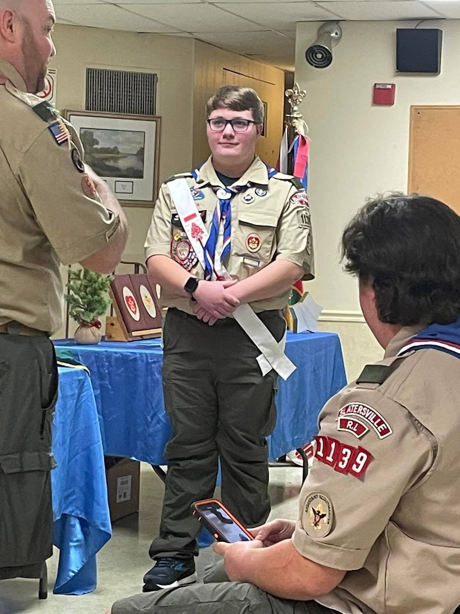

I became an Eagle Scout on December 10, 2022.
I have been a part of Scouts since I was 6. I started out as a tiger and went all the way to Webelos and Arrow of light. The next year I joined Boy Scouts where I eventually became an Eagle Scout.
I love to play video games. Some of my favorite video games are Minecraft, Star Wars: Republic Commando, Star Wars: Battlefront 2 (Both of them), and Star Wars: Empire at War (Fall of the Republic mod).
I have a couple collecctions of Star Wars stuff such as 6 Disney Legacy Sabers and 3 Black Series Helmets. The helmets I have are a Phase II Clone trooper helmet, Phase II Captain Rex helmet, and Boba Fett Helmet.
I graduated from North Smithfield High School in 2024 and am now in my first year of college at New England Institution of Technology. I am almost done with my first year and will begin my second year in July.